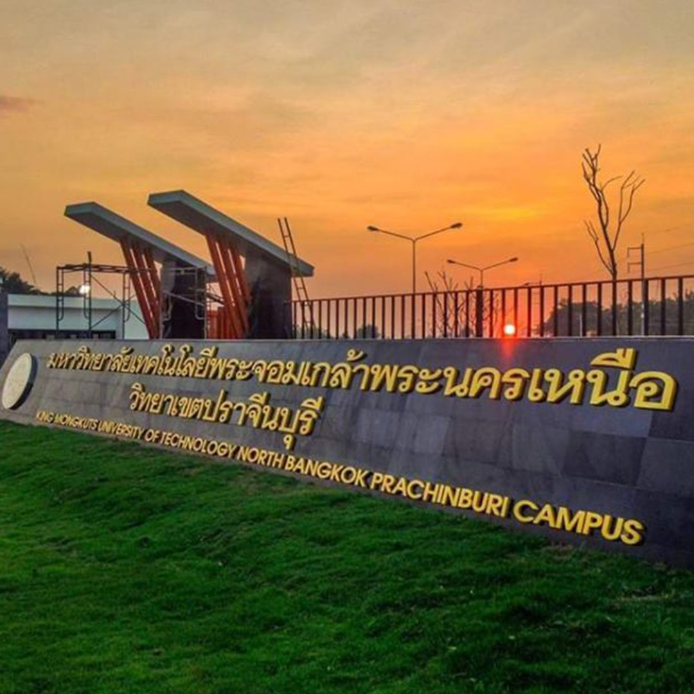

จุดเริ่มต้นของวิทยาเขตปราจีนบุรี
สถาบันเทคโนโลยีพระจอมเกล้าพระนครเหนือได้ขยายวิทยาเขตและจัดซื้อที่ดินบริเวณตำบลเนินหอม อำเภอเมือง จังหวัดปราจีนบุรี เพื่อจัดตั้งพื้นที่การศึกษาในนาม “สถาบันเทคโนโลยีพระจอมเกล้าพระนครเหนือ ปราจีนบุรี”
KING MONGKUT'S UNIVERSITY OF TECHNOLOGY NORTH BANGKOK
มหาวิทยาลัยเทคโนโลยีพระจอมเกล้าพระนครเหนือ (มจพ.) วิทยาเขตปราจีนบุรี ก่อตั้งขึ้นตามนโยบายกระจายโอกาสทางการศึกษาไปสู่ภูมิภาคของรัฐบาล โดยเริ่มมีแนวคิดจัดตั้งขึ้นในช่วง พ.ศ. 2538 – 2539 เพื่อรองรับความต้องการกำลังคนในภาคอุตสาหกรรมและการเติบโตทางเศรษฐกิจในพื้นที่ภาคตะวันออกของประเทศไทย วิทยาเขตนี้จึงมีบทบาทสำคัญในการผลิตบุคลากรที่มีความเชี่ยวชาญด้านเทคโนโลยี วิศวกรรมศาสตร์ และการจัดการที่ตอบโจทย์อุตสาหกรรมในจังหวัดและบริเวณใกล้เคียง

สถาบันเทคโนโลยีพระจอมเกล้าพระนครเหนือได้ขยายวิทยาเขตและจัดซื้อที่ดินบริเวณตำบลเนินหอม อำเภอเมือง จังหวัดปราจีนบุรี เพื่อจัดตั้งพื้นที่การศึกษาในนาม “สถาบันเทคโนโลยีพระจอมเกล้าพระนครเหนือ ปราจีนบุรี”
มีการจัดตั้งคณะเทคโนโลยีและการจัดการอุตสาหกรรม (FITM) ขึ้นเป็นคณะแรกของวิทยาเขตนี้ เพื่อผลิตบัณฑิตในระดับปริญญาตรีและบัณฑิตศึกษา ที่เน้นความรู้ด้านเทคโนโลยีประยุกต์ควบคู่กับการบริหารจัดการโรงงานและกระบวนการอุตสาหกรรม
มหาวิทยาลัยเทคโนโลยีพระจอมเกล้าพระนครเหนือได้เปลี่ยนสถานะเป็นมหาวิทยาลัยในกำกับของรัฐ ส่งผลให้วิทยาเขตปราจีนบุรีได้รับการพัฒนาโครงสร้างพื้นฐาน อาคารเรียน และห้องปฏิบัติการที่ทันสมัยอย่างรวดเร็วเพื่อตอบโจทย์ความเป็นเลิศทางเทคโนโลยี
เพื่อตอบรับการเติบโตและการลงทุนในเขตอุตสาหกรรมภาคตะวันออก มหาวิทยาลัยได้เปิดคณะใหม่เพิ่มเติม จนปัจจุบันมีการเรียนการสอนรวม 4 คณะหลัก เพื่อรองรับความต้องการของตลาดแรงงานและภาคอุตสาหกรรมในพื้นที่
วิทยาเขตปราจีนบุรีมุ่งเน้นหลักสูตรด้านวิทยาศาสตร์ เทคโนโลยี วิศวกรรมศาสตร์ และการจัดการ เพื่อเป็นศูนย์กลางการพัฒนาบุคลากรที่มีความพร้อมทั้งด้านวิชาการและการทำงานจริงในภาคอุตสาหกรรม
วิทยาเขตปราจีนบุรี มุ่งเน้นหลักสูตรด้านวิทยาศาสตร์ เทคโนโลยี วิศวกรรมศาสตร์ และการจัดการ โดยแบ่งโครงสร้างคณะออกเป็น 4 คณะหลัก ดังนี้